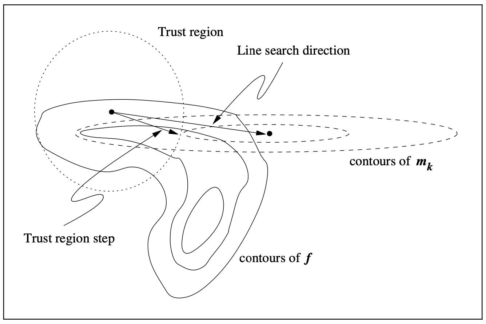

4 Trust-Region Methods¶
Trust-region methods define a region around the current iterate within which they trust the model to be an adquate representation of the objective function, and then choose the step to be the approximate minimizer of the model in this region.
The figure below illustrates the trust-region approach on a function \(f\) of two variables in which the current \(x_k\) and the minimizer \(x^*\) lie at opposite ends of a curved valley.
{kind=link}
In this chapter, we will assume that the model function \(m_k\) is quadratic. Moreover, \(m_k\) is based on the Taylor-series expansion of \(f\) around \(x_k\), which is
where \(g_k = \nabla f(x_k)\) and \(t \in (0, 1)\). By using an approximation \(B_k\) to the Hessian in the second order term, \(m_k\) is defined as
where \(B_k\) is some symmetric matrix. We emphasize the generality of the trust-region approach by assuming little about \(B_k\) except symmetry and uniform boundedness.
To obtain each step, we seek a solution of the subproblem
where \(\delta_k > 0\) is the trust-region radius. In any case, as described below, we need only an approximate solution to obtain convergence and good practical behavior.
We choose the trust-region radius \(m_k\) based on the agreement between the model function \(m_k\) and the object function \(f\) at previous iterations. Given a step \(p_k\) we define the ratio
the numerator is called the actual reduction and the denominator is the predicted reduction. If \(\rho_k\) is close to zero or negative, we shrink the trust region by reducing \(\delta_k\) at the next iteration.
Here \(\hat{\delta}\) is an overall bound on the step lengths. We restate the trust-region subporblem as
Theorem 4.1. The vector \(p^*\) is a global solution of the trust-region problem
if and only if \(p^*\) is feasible and there is a scalar \(\lambda \geq 0\) such that the following conditions are satisfied:
The figure below shows the properties of this theorem with different \(\delta\). Note that
Thus, when \(\lambda > 0\), the solution \(p^*\) is collinear with the negative gradient of \(m\) and normal to its contours.